Solvian Group · Confidential preview
A walkthrough of the working product: who is doing the work, which process it belongs to, the current status, the documents, and the outcome.
The Digital Command Centre is Solvian Group’s internal work and outcome system. It is built so leadership can answer four questions without a status call:
This preview is loaded with Solvian’s nine verticals and the named leaders from the Command Centre requirements. Sample work is representative of Phase 1 — not a live production extract.
| Audience | What they see first |
|---|---|
| Group Leadership, Admin | Home dashboard — active, overdue, blocked, people load and outcomes across verticals. |
| Vertical / operating CEOs and department heads | Team dashboard — workload, pending reviews and recent activity. |
| Project managers and employees | My work — today, upcoming, overdue and blocked items assigned to them. |
The product follows the client model: people → work → process → tasks → documents → outcome.
| Object | Meaning in Solvian terms |
|---|---|
| Department | A vertical — Arica, SIPL, Biorefineries, Consultancy, Ideamint, Myara, Arica Tech Security, Stargold, Futuristics Mobility — plus Group Office. |
| Work item | The project of work: a lead, a live project, a bid, a funding request, a legal pack. |
| Process | The shared flow it belongs to (pipeline, execution, tender, finance, documents, KPI, and so on). |
| Task | A smaller step inside that work item. |
| Document / comment / outcome | Evidence, discussion and whether the expected result was achieved. |
People sign in with their work email. The left panel states the purpose of the Command Centre. Preview accounts are listed under “Demo accounts”.
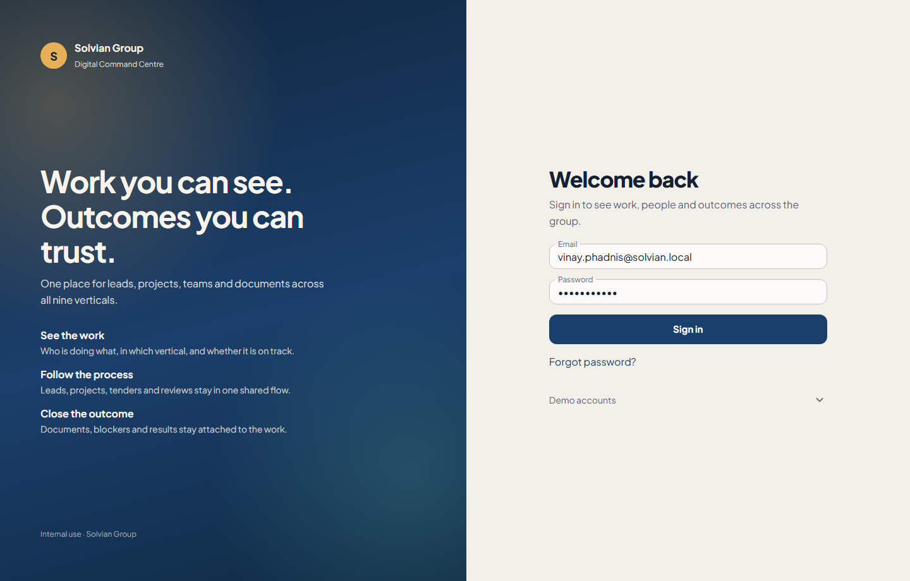
Sign in — Solvian Digital Command Centre
Group Leadership lands on Home. Numbers are clickable. Overdue and blocked work sit beside workload by person so Vinay (or any VP) can see where attention is needed.
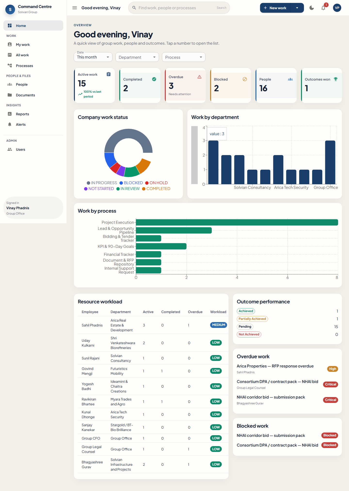
Home for Group Leadership — live preview data
Each person sees only what is assigned to them, grouped as Today, Upcoming, Overdue, Blocked and Completed. A board view is one click away.
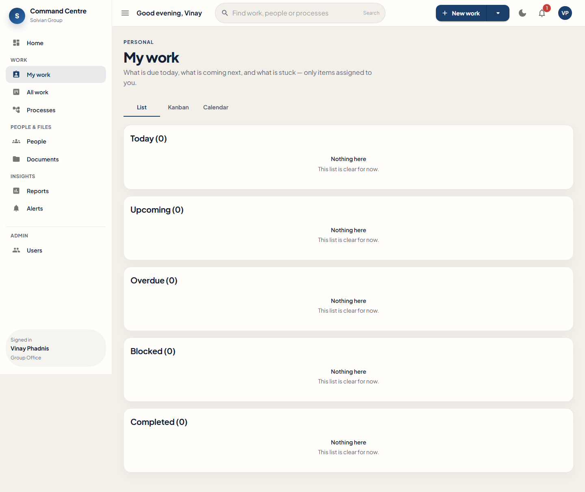
My work — list
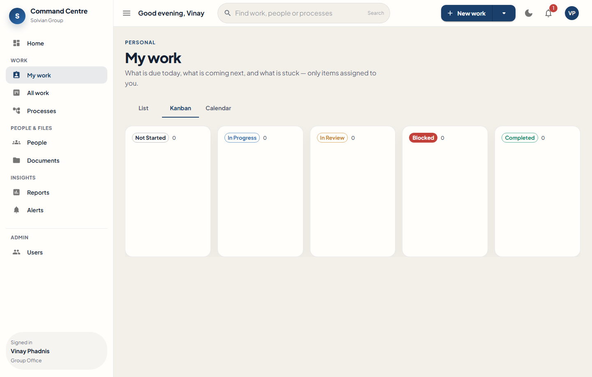
My work — board
The group list answers “who is doing what”. Filter by vertical, process, status or priority. Status can be changed in the row. Export is available for leadership packs.
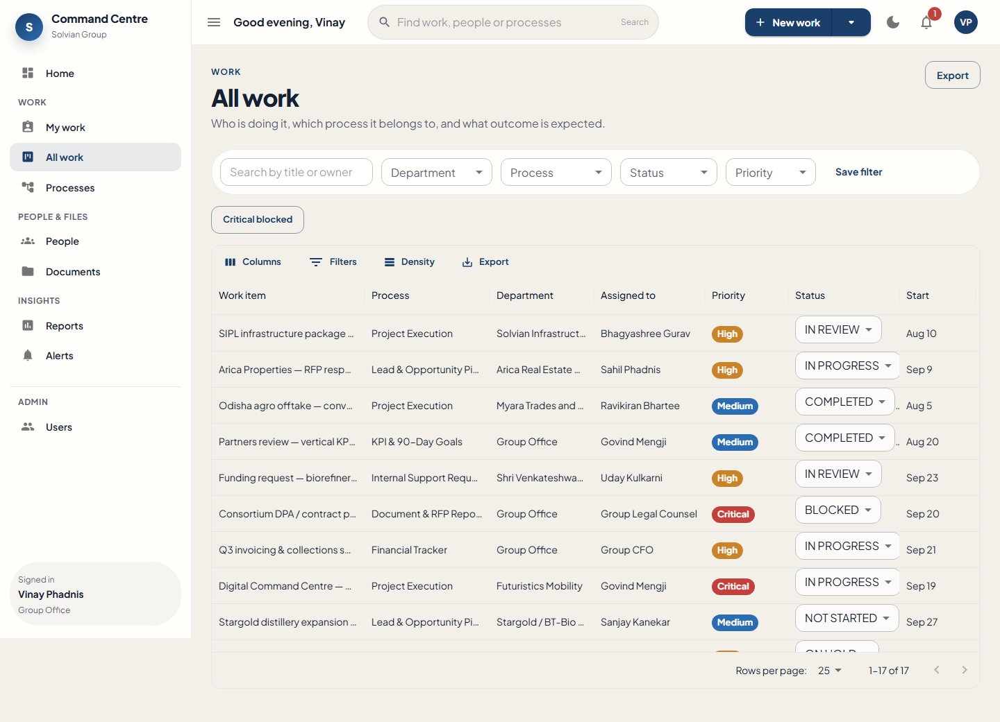
All work — SIPL, Arica, Myara, Group Office and other verticals
Opening a row shows the owner, process, dates, description, then tabs for tasks, documents, outcome, comments and activity. This is the record leadership can trust without chasing email.
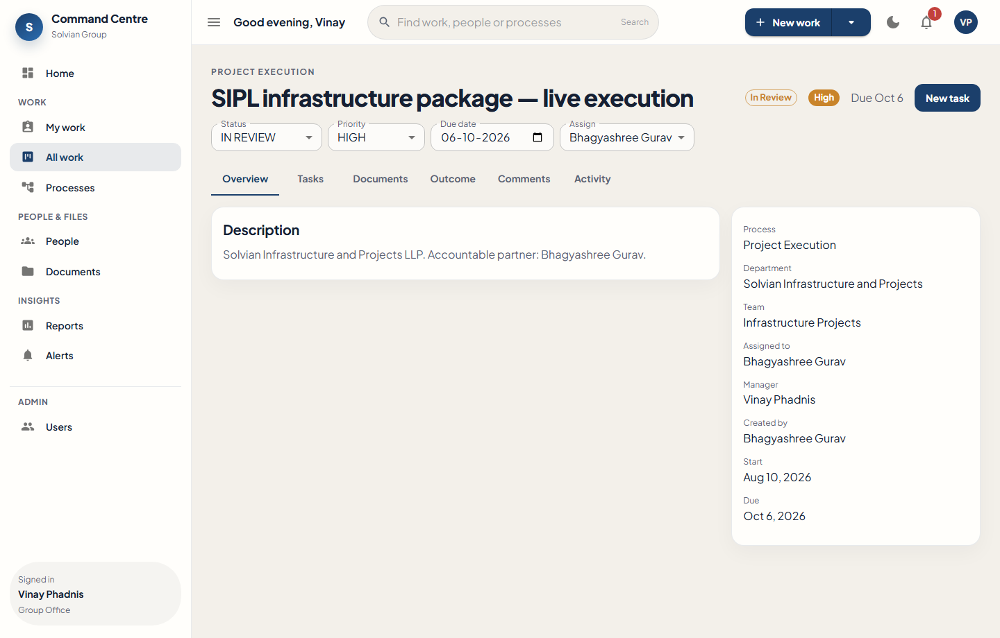
Work detail — SIPL infrastructure package
New work in the header starts a work item: title, process, vertical, owner, dates, expected outcome, and optional first tasks.
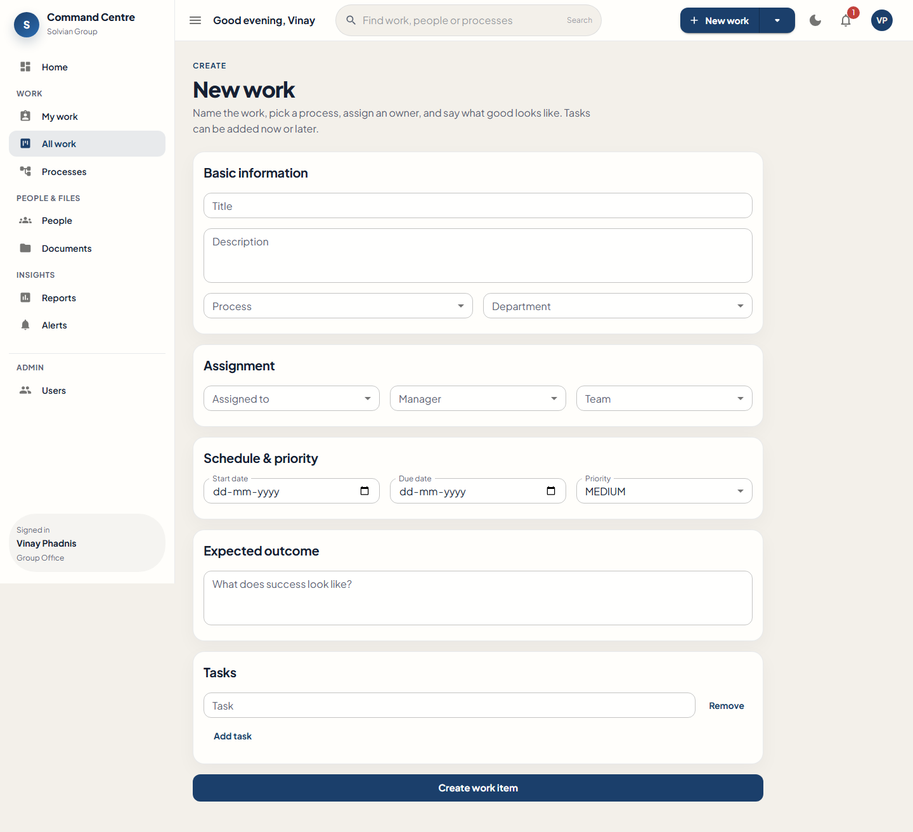
Create work
Phase 1 processes from the requirements are already on the platform: pipeline, project execution, bidding, documents, finance, internal support, KPIs, and risk.
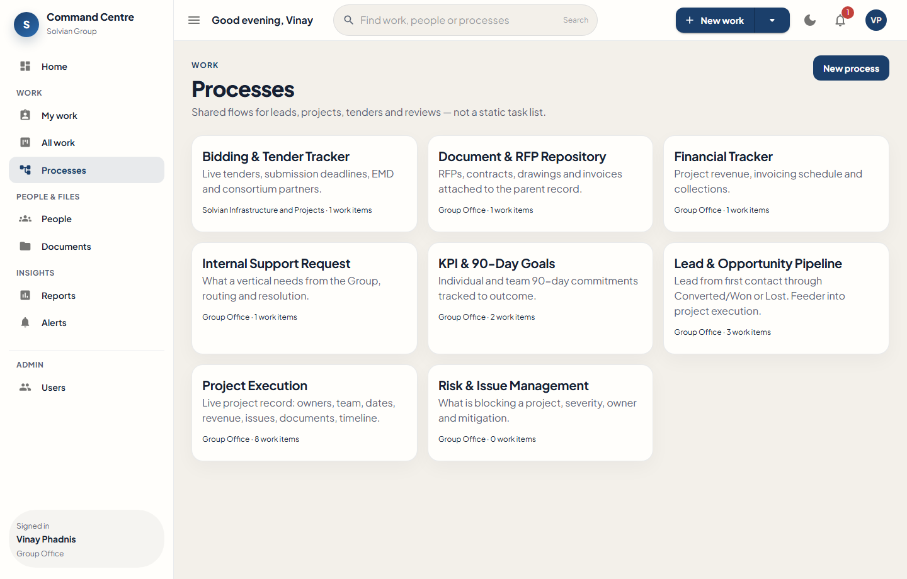
Processes
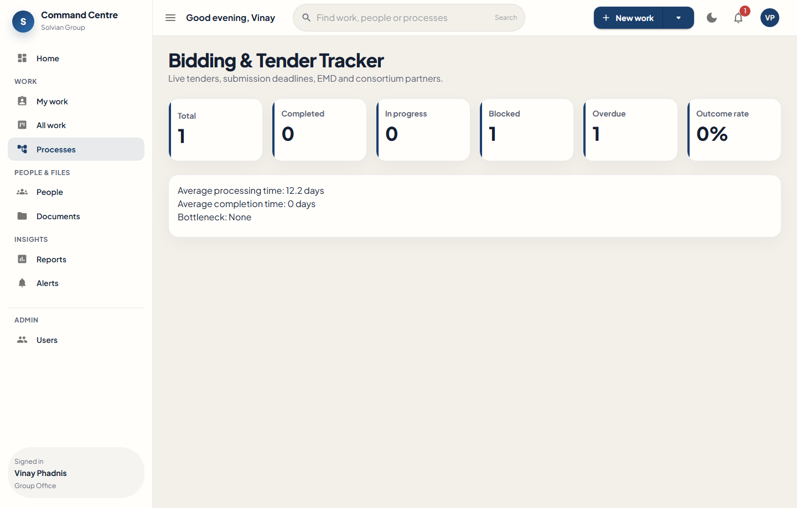
Process detail — volume and status
Workload by person: active, completed, overdue and high-priority counts, so overload is visible.
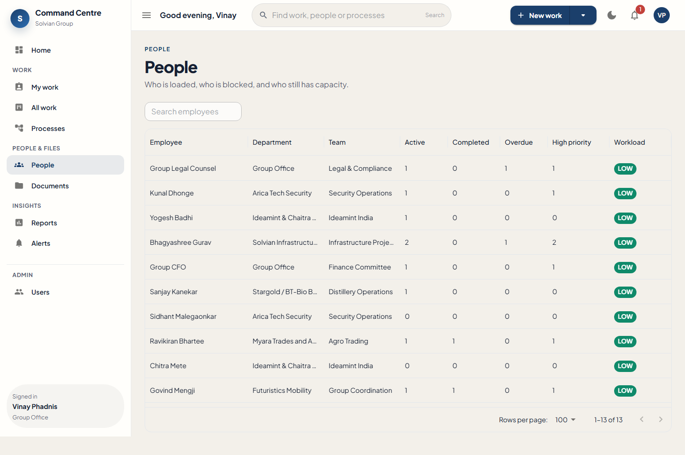
People and workload
Documents stay attached to work. Reports give leadership summaries and export. Alerts surface overdue, blocked and review items.
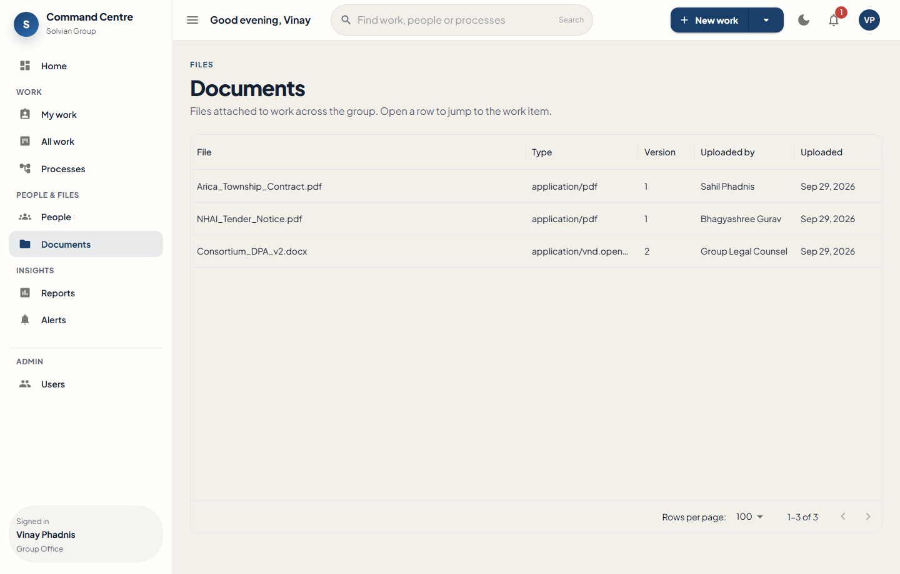
Documents
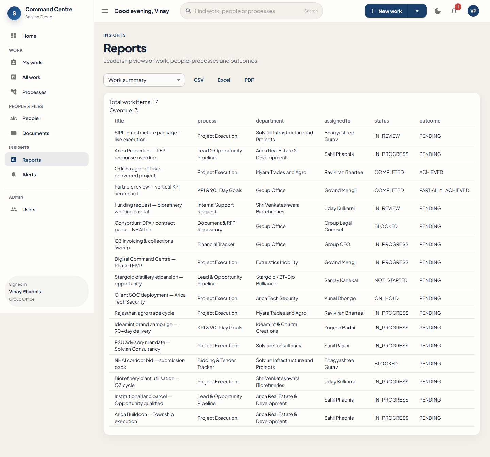
Reports
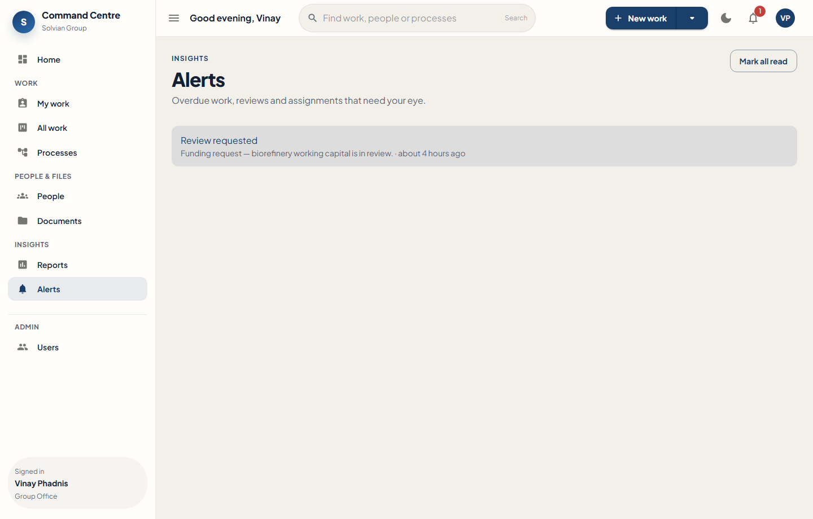
Alerts
Named Solvian leaders are already set up as users, with roles and verticals. Admins can add more people without a developer.
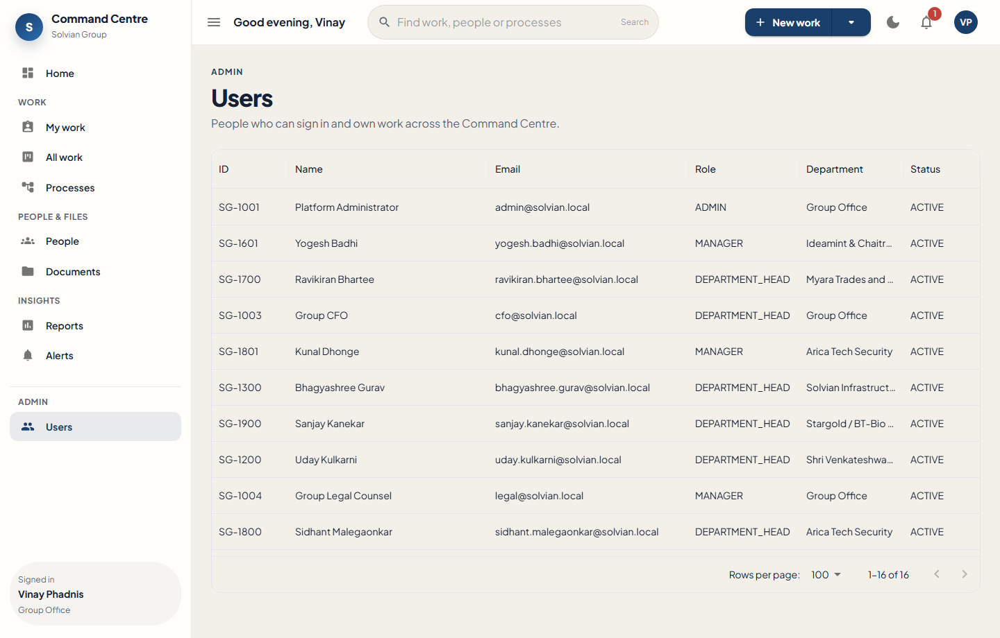
Users — preview directory
All preview accounts use the same password: Welcome123!
| Role | Sign in as |
|---|---|
| Group Leadership | vinay.phadnis@solvian.local |
| Vertical CEO (Arica) | sahil.phadnis@solvian.local |
| Operating CEO (SIPL) | uday.kulkarni@solvian.local |
| Project manager | kunal.dhonge@solvian.local |
| Admin | admin@solvian.local |
The live preview is at http://localhost:5173 on the machine running the application.
Not yet live production data. Real project rows from Solvian systems can replace the sample work once the client confirms the model.